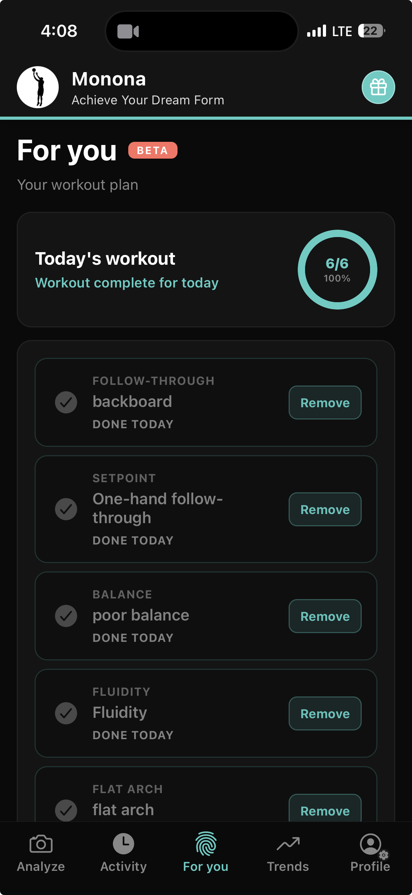
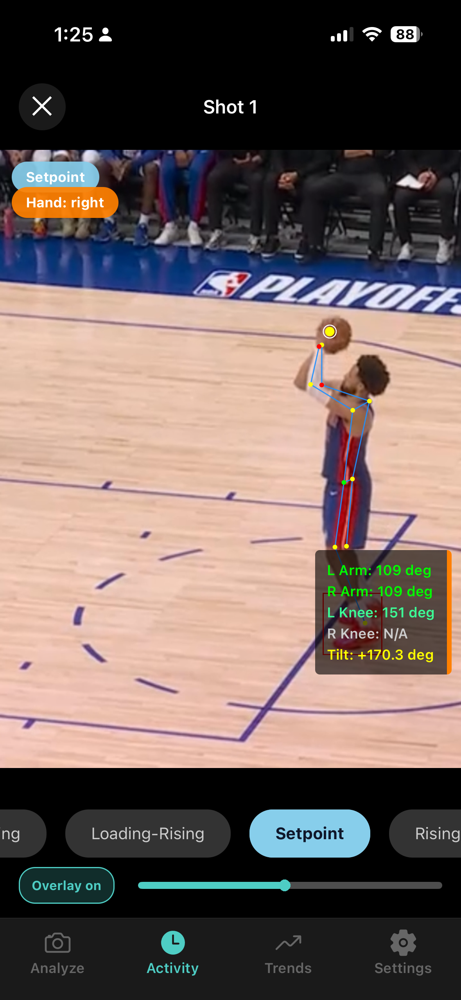
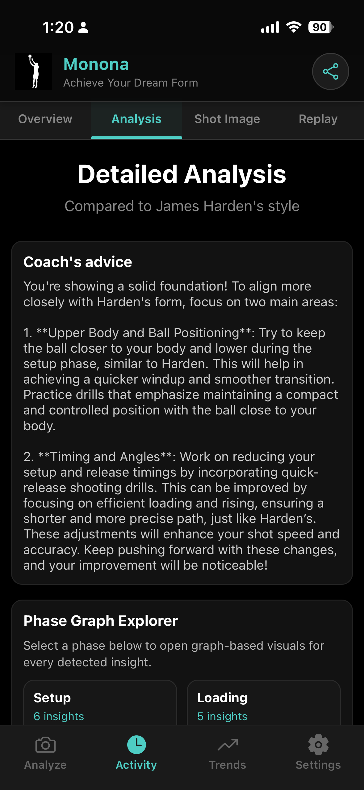
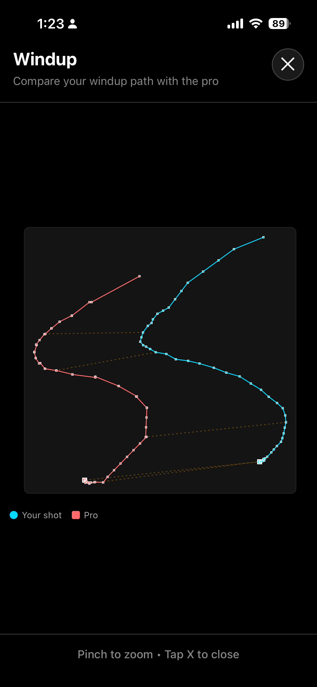
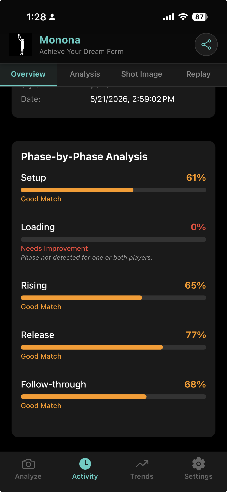

70+ NBA 職業球員
選擇你的模型球員，研究讓他們頂尖的姿勢特質。
職業球員比對
與 70+ 位職業模型配對，查看逐階段相似度，並用分析找出你差在哪裡。
診斷不穩定之處，與職業球員比對機制，並取得針對出手時機、平衡、肘部路徑與 follow-through 的訓練。
Hoop Mo 依你的投籃分析建立每日訓練計畫，不是通用操，而是針對你姿勢問題的練習。

App 真實螢幕：姿勢分析、教練回饋與表現數據。

階段分解

AI 教練

動作分析

職業比對
從錄影到進步，四個步驟。
用智慧型手機鏡頭從側面拍攝你的投籃姿勢。
AI 處理影片、正規化資料，並分解投籃的每個階段。
你的姿勢會與 70+ 位職業球員比對，找出最適合你的風格。
檢視教練建議、視覺圖表與重播，提升你的表現。
球員、家長、訓練師與 AAU 教練，想拿到投籃機制上的清楚答案，而不是憑感覺猜。
了解為什麼命中率場場起伏，並拿到針對你真實姿勢缺口的訓練。
在家清楚知道要練什麼，用客觀回饋取代「看起來哪裡不對」的爭論。
用階段分解與職業比對支撐你的指導，學員在手機上就能看懂。
在練習中展示慢動作分解，讓每位球員有共同的訓練標準。
與 NBA 模型配對的原理。
可以。Hoop Mo 會把你的投籃與 70+ 位 NBA 球員配對，或讓你自選模型。你會得到逐階段比對、相似度百分比，以及與職業球員並排的視覺重播。
用手機從側面錄下投籃。Hoop Mo 追蹤身體關鍵點，將動作分成準備、出手等階段，並與 NBA 模型比對，提供相似度分數與教練提示。
不一樣。Live Shoot 是在球場上的即時教練與 Mo 對話。職業比對著重於將你錄下的姿勢與 NBA 模型比對。兩者都在同一款免費 App 中。請見Live Shoot。
下載 Hoop Mo，把你的姿勢與 NBA 球員做比對。